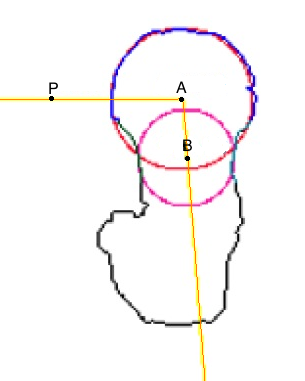

Projects > Wash U Courses > Geometric Computing for Biomedicine
Washington University in St. Louis, Fall 2011 The course had several modules that were implemented in Mathematica that I believe are reused every semester so I am not going to upload them.
As the final project for the class I implemented a plug-in for ImageJ that reads in a binary image file of a femur, fits circles through the femur head and femur neck, and automatically measures the femur angle (PAB) as in the figure on the right.
The circle fitting method used is the simple Kasa Method, but the results are quite good.
The UI is shown below.
The first icon opens an image file and the second one runs the algorithm on the file and calculates the femur angle. You can zoom in and out on the image, as well as rotate it 90 degrees clockwise or counterclockwise. The last icon toggles the original ImageJ interface on and off.

You can learn more about the project and see the results by reading the Femur Head and Neck Angle Measurement write-up.
You can find the code on my GitHub. Follow the instructions in the Readme to download the ImageJ plugin.